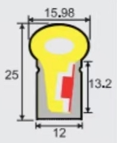
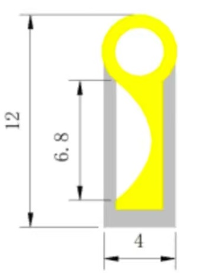

Spiral — 3D
⟨⟨
2D
3D
LED Tube Profile

Current
16 × 25 mm

New
4 × 12 mm
Profile Scale
1.0×
Curvature
Concave Curvature — edge rise
0 cm
Aim Offset (± from normal)
0°
Spiral Geometry
Start Angle
120°
Inner Diameter
186 mm
Tube Pitch (center-to-center)
26.0 mm
CCW winding
Segments
Segment Count
31
Segment Length
500 cm
Segment Gap
0.0 mm
Support Ribs
Show ribs (click-in)
Rib Count
15
Rib Thickness
2.0 mm
Display
Wall grid
Color segments
Settings
Save Settings
☰
drag = orbit · scroll = zoom · right-drag = pan
Spiral Length:
--
· Turns:
--
· Segments:
--
Single rib — construction (6 o'clock) · scroll zoom, drag pan, dbl-click reset